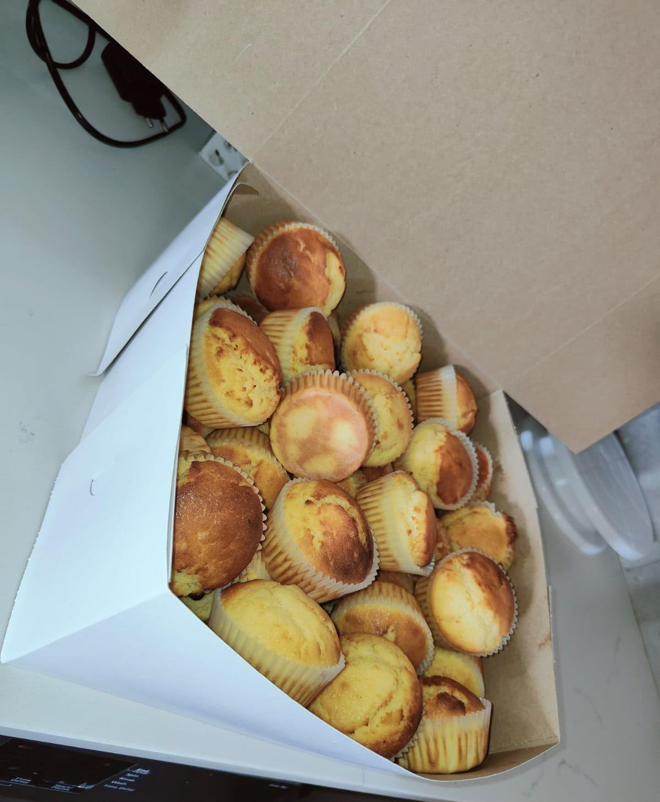
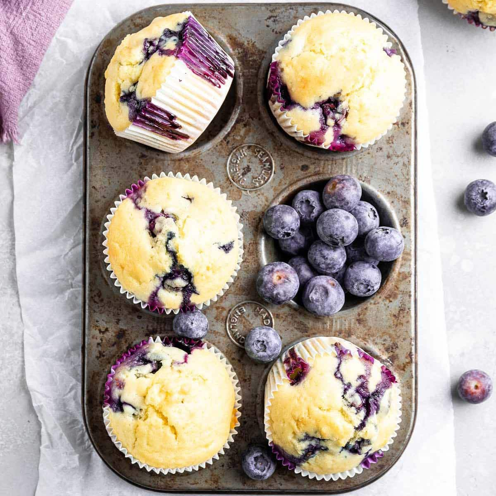
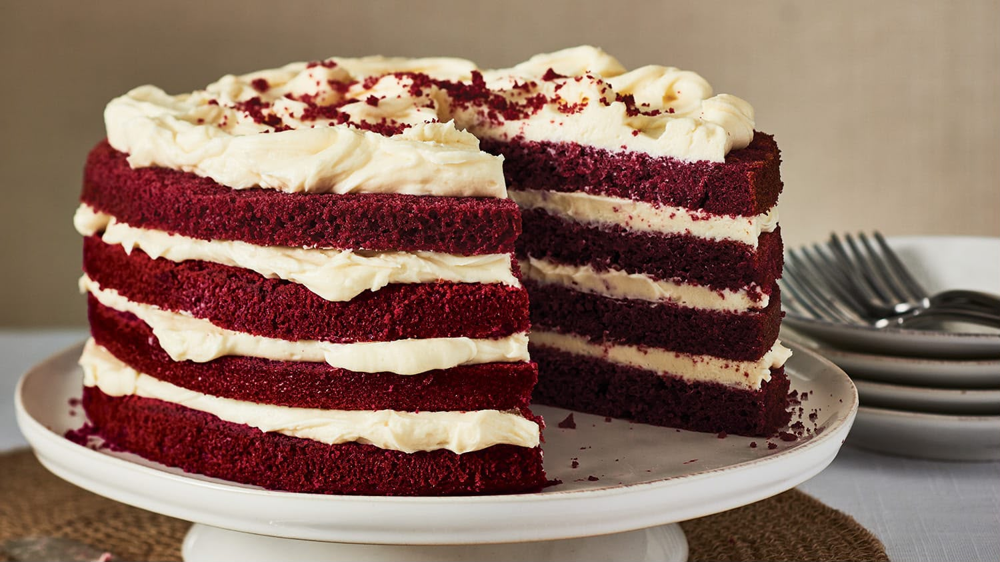
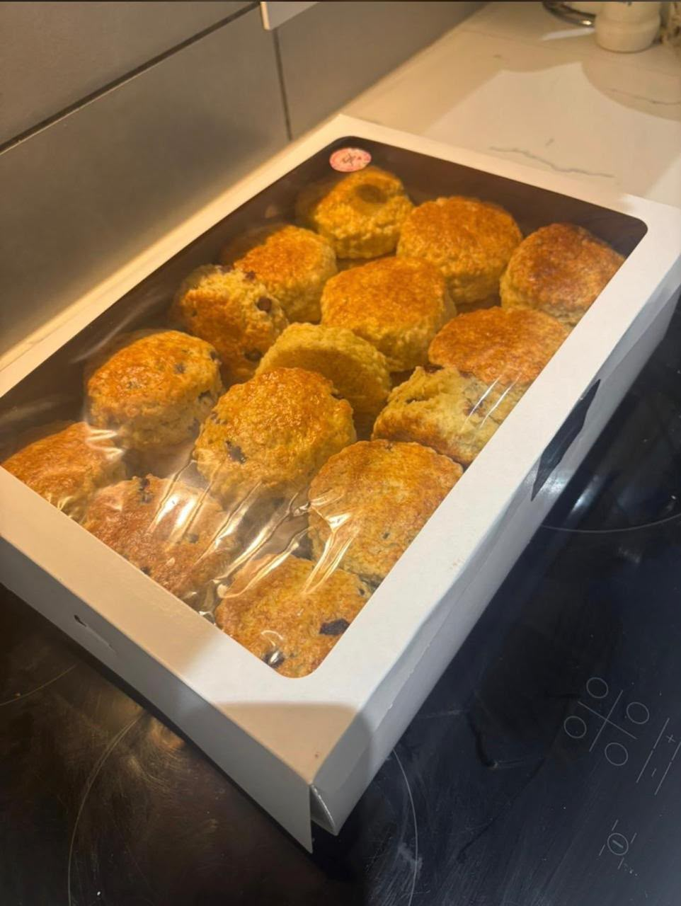
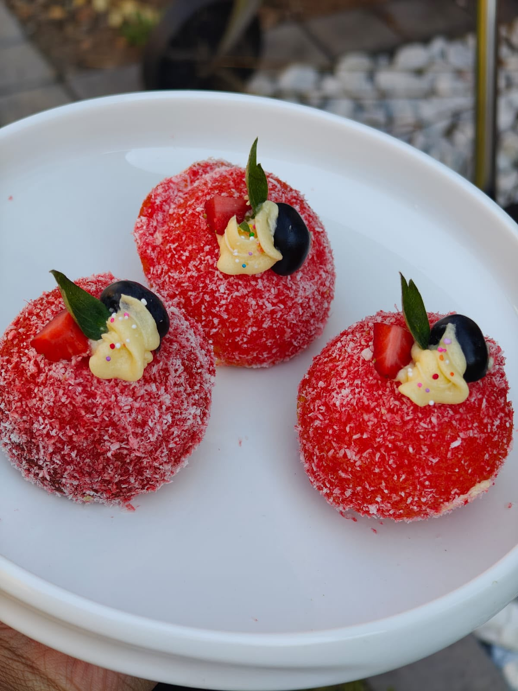
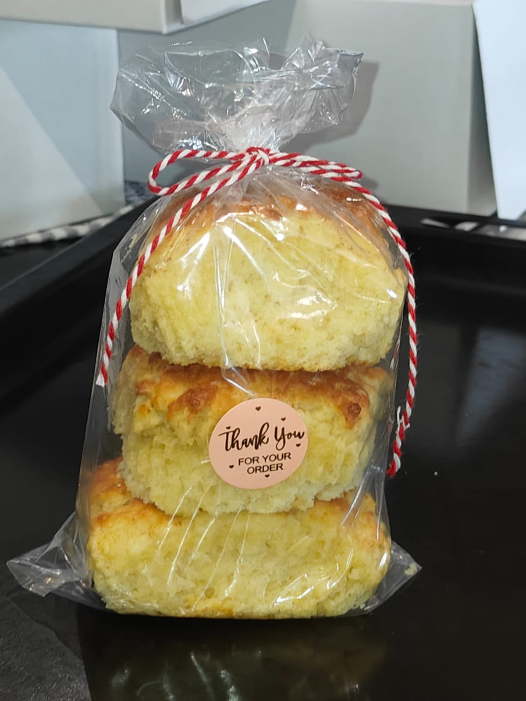

Our Products
- Fresh Bread: Daily baked loaves made from natural ingredients.
- Cakes: Custom cakes for birthdays and special occasions.
- Pastries and Cookies: A variety of delicious treats.
- Scones: Classic plain, fruit, and cheese scones baked fresh daily.





